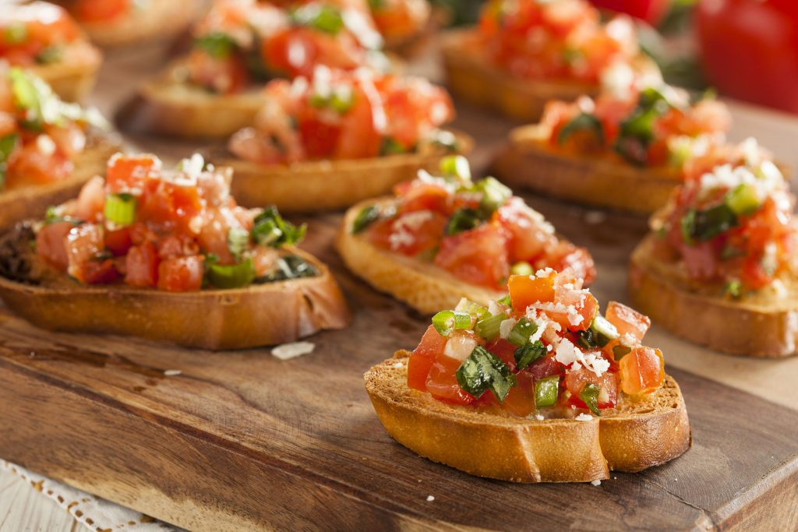

Bruscheta

This top-rated bruschetta recipe proves that summertime gives you perfectly ripe and juicy tomatoes, one of the
best ways to enjoy them is also one of the easiest.
Incredients
- 1 loaf French bread, cut into 1/4-inch slices
- 1 tablespoon extra-virgin olive oil
- 8 roma (plum) tomatoes, diced
- 2 teaspoons extra-virgin olive oil
Steps
- Gather all ingredients.
- Preheat oven to 400 degrees F (200 degrees C).
- Brush bread slices on both sides lightly with 1 tablespoon oil and place on large baking sheet. Toast bread until golden, 5 to 10 minutes, turning halfway through.
- Meanwhile, toss together tomatoes, basil, Parmesan cheese, and garlic in a bowl.
- Mix in balsamic vinegar, 2 teaspoons olive oil, kosher salt, and pepper.
- Spoon tomato mixture onto toasted bread slices.
- Serve immediately and enjoy!